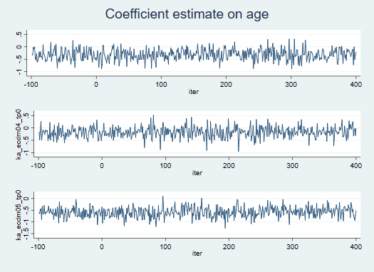
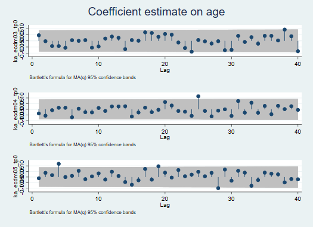

5 Oct 2018 , v0.01
The following is heavily borrowed from Simo’s tutorial on missing data
Generally we want data to be complete – that is we wish that all individuals we have sampled agree to be interviewed and subsequently provide valid responses to all applicable questions in the questionnaire.
However, more often than not data are incomplete. For example, sampled individuals may fall out of reach (i.e. move or simply ignore us), or decline to be interviewed. If we retained this type of respondents in the sample, our dataset would have observations that are subject to unit non-response. That is, we would not have any response data at all for these subjects.
Subjects can also decline to answer certain questions or simply skip questions. This is known as item non-response and it manifests as a “gappy” pattern in the dataset.
Unit and item non-response are the patterns of missingness commonly present in data used in social science research, and missing data, as you can tell already, is simply the full or partial absence of valid values or measurements for one or more subjects for one or more variables.
We have collected data for a sample of individuals that include person, time and treatment identifiers as well as demographic variables and responses to four psycho-social scales: dmn, hsclg, ka_ecdm and kzf.
We know that there is some missingness in our data but before we proceed with analyzing the data, we want to know more how serious missigness is and whether the amount of missingness may create problems for our analysis.
We read the data in look at the first 12 responses (4 subjects observed 3 times) for dmn.
. use "`data_dir'/missingDataTutorial", clear . qui list id time ka_ecdm03 ka_ecdm04 ka_ecdm05 /// > hsclg01 hsclg02 hsclg03 in 1/12
The number of missing observations in dmn is fairly large. Are the rest of the scales having similar missing data issues? Let’s use command misstable to explore the missingness further.
We first look at a summary table of the missingness
. qui misstable summarize, gen(fl)
Next, we explore the pattern of missingness
. qui misstable pattern
It appears that some scales have more missingness than others. The proportion of complete responses is 44%. The proportion of subject who responded to all questions in all waves is 34.375%.
As we will see shortly, there are three distinct missing-data mechanisms defined in the literature. To understand better these mechanisms and how they defer from each other, we first need to define two terms: observed and unobserved data.
Observed data are the values or measurements that a researcher collects. In our dataset, these would be the recorded values (except for the missing values) for all variables and items.
Unobserved data are data that researchers fails to measure.
When we say that data are missing completely at random (MCAR), we mean that the missing-data mechanism is independent of both the observed and unobserved data. We can think of MCAR as a mechanism that introduces missigness to complete data by changing, on an entirely independent and random basis, the values of some variables to missing.
In theory, we would not expect incomplete records (or observations that contain missing values for some variables) to differ systematically from complete records.
When working with surveys, very rarely can researchers claim/assume that missingness is MCAR. The reason is that usually there are underlying causes for subjects not to respond, causes which may or may not have been observed by the researcher (as part of the study).
When we say that data are missing at random (MAR), we mean that the missing-data mechanism is dependent on the observed data but is independent of the unobserved data. We can think of this mechanism as one that introduces missigness to complete data by changing the values of some variables to missing based on the observed values of other, observed variables belonging to the same record (subject).
In theory, we expect to see difference between complete and MAR data, specifically in the variables affected by missingness.
Since under MAR the mechanism of the missing data is dependent on the observed data only, we are able to both test for this missingness mechanism and address the missingness methodologically.
When working with surveys, MAR is the type of mechanism that is commonly assumed. There are standard methods for handling it, some of which we will discuss shortly.
When we say that data are missing not at random (MNAR), we mean that the missing-data mechanism is dependent on the unobserved data. We can think of this mechanism as one that introduces missigness to complete data by changing the values of some variables to missing based on either the unobserved values of the same variable or the values of other, unobserved variables belonging to the same record.
With MNAR, we expect incomplete and complete cases to differ systematically. There are several classes of methods that can handle MNAR data of which sample selection models (with the Heckman selection model being the flagship model) is the most popular class in social science.
We have seen so far that missingness may impact the estimates of quantities of interest. Data collectors and applied researchers utilize a variety of strategies and methods to minimize or mitigate the impact of missingness.
“Design trumps model” the old saying goes, and it could not be more relevant to addressing missingness. To minimize missingness, the data collector has to maximize effort in designing a solid data collection plan (containing various provisions and fallbacks) and executing it with a high level of fidelity.
At the stage of survey sampling design, it is almost always advisable to provision for oversampling. Oversampling means that we will sample more subjects that we think we would need. How many more subject you may ask? Well, some survey agencies sample 5% more, others sample 10% more. It all depends on the amount of missingness or non-response one might expect (and also of course on cost).
If in doubt, it is always recommended to ask a survey design specialist and/or someone very familiar with the population that will give rise to the sample.
Researchers should always run pilot studies. Pilots can help in several imporant ways:
Validate the survey instrument (questionnaire that is)
Validate the rules and procedures of data collection, management and storage
Gain preliminary inderstanding of expected unit and item non-response
Test strategies for minimizing non-response (i.e. incentivisation)
Once a respondent agrees to participate, we want to help them provide a complete response. This may mean working around respondent’s constraints or employing some form of incentivisation. We always want to consult with the Institutional Review Board’s (IRB) about acceptable forms of incentivising response.
We also want to avoid strategies that will create perverse incentives as they are likely to ruin our study!
Despite our best effort during the planning and collection stages, our data may still be subject to missingness. What can we do ex-post?
Weighting, or adjusting the relative contribution of respondents’ data to estimated quantities of interest, is a popular way of correcting for unit and item non-response.
A commonly used weighting techniques (in the past) involves calculating probability of reponse weights for each subject in the sample and then using these weights in subsequent analyses. This technique is known as inverse probability weighting (IPW). IPW are commonly implemented in the following manner: we would predict the probability of a complete response for every subject as a function of their observables and then use the inverse of the predicted probabilities as a probability weight in our complete-case analysis.
What does IPW really do for us?
Suppose the likelihood of a complete response of a person with specific charasterics is 1. The weight that we will assign to this individual would therefore be 1 which in effect means that they will be counted once in the sample – they will only represent themselves as everyone else with the same characteristics would have provided a complete response as well.
Now, suppose the likelihood of a complete response of a person with a different set of characteristics is 0.5. This means that we would expect only half of the people with the same charastestics to provide a complete response. Therefore everyone who actually responded to all questions will be given a weight of 2, or will be counted twice: once for themselves and once for a respondent with same characteristics who did not respond.
With likelihood of 0.1, everyone with same characteristics who responds will represent themselves and 9 other non-responders like them.
Two-phase estimation for missing data
This is a method that assumes the following process governing missingness:
Phase 1: Original sample selected and variables without missing values are measured
Phase 2: A subset of respondents is selected and the remaining variable are observed
Obvious limitations of this method? It is only useful when we can divide the observations into complete and incomplete
Imputation methods are an alternative. Imputation generally refers to the process of filling in the “gaps” or missingness in our dataset with valid values in a principled manner. Imputation methods generally fall into two categories: methods for single imputation and methods for multiple imputation.
Single imputation
Methods that fall under the umbrella of single imputation include hot- and cold-deck imputation, mean substitution and regression.
Hot-deck imputation
The method involves replacing missing values with values from a random similar observation in the same dataset.
Cold-desk imputation
The method involves replacing missing values with values from a random similar observation from a different dataset.
Mean substitution
The method involves replacing missing values of a variable with the mean value of the variable computed over non-missing observations.
Regression
The method involves estimating a regression equation from all complete cases and then replacing the missing values with the respective predicted values from the regression.
There are many other single imputation techniques but ultimately all of them are subject to one common limitation. Could you name it?
Multiple imputation (MI)
Multiple imputation, a simulation-based technique proposed by Donald Rubin, overcomes the problems of variability that single imputation methods fail to address. (Yes, single imputation methods do not account for the uncertainty in the imputed values; that is their common limitation.) In a series of articles in the 1970’s and 1980’s, culminating with his seminal book “Multiple Imputation for Nonresponse in Surveys” published in 1987, Rubin developed the theoretical basis of MI and proposed the following general algorithm for its implementation:
The following formulas for aggregation used in Step 3 are known as the Rubin’s rules:
\[ \hat{\beta} = \frac{1}{m}\sum_{m=1}^{M}\hat{\beta}_{m} \] \[ V_{\beta} = W + (1 + \frac{1}{m})B \]
where \[ W=\frac{1}{m}\sum_{m=1}^{M}s_{m}^{2} \] \[ B=\frac{1}{m-1}\sum_{m=1}^{M}(\hat{\beta}_{m} - \hat{\beta})^{2} \]
Nowadays, multiple imputation is the recommended technique for handling missing data.
Full-likelihood methods (FLM)
FLM are based on the joint distribution of the variables affected by missingness together with the outcome of the regression model we wish to estimate. We specify a likelihood function which we then estimate to retrieve the most likely regression paratemers. A main limitation of this method is that all variables need to be continuous and the regression model has to be linear.
Doubly robust methods (DRM)
While with IPW weighting methods we model the probability of complete cases and mulitple imputation models the distribution of missing variables, DRM combine the two approaches. Generally, DRM use two models: one predicts the missing values and the other predicts the missing probabilities (which are used as weights). There are both parametric and semi-parametric implemetations of DRM but they have remained somewhat on the sidelines in social science research.
Multiple imputation methods fall under two broad categories: univariate MI methods and multivariate MI methods. We use univariate methods for multiple imputation if missingness is MCAR or MAR and we wish to impute the missing values of a single variable. In comparison, multivariate multiple imputation (MMI) methods are helpful if (missingness is MCAR or MAR and) we wish to impute multiple variables with missing values simultaneously while (hopefully!) preserving the relationships among them.
This ability to allow for relationships among the variables (missing or non-missing) in a dataset is what makes the MMI methods so popular in social science research. We will focus on three distinct flavors of MMI in order of specification flexibility they provide: imputation using multivariate normal regression, imputation in monotone data, and chained imputation.
This method of imputation can be used when imputing one or more continuous variables. It uses multivariate normal regression to model the mean function and Markov Chain Monte Carlo to impute the missing values.
Oh wait, what is a Markov chain?
A Markov chain is a mathematical model of a stochastic system. It is defined by a set of states and a set of transition probabilities for traversing among these states. Intuitively, we can think of Markov chains as random walks on graphs. This website has several interactive examples of Markov chains that can help us understand them better.
And what is a Markov Chain Monte Carlo (MCMC)?
MCMC is a class of algorithms that allow us to sample from complex probability distributions. The Monte Carlo part of MCMC refers to the fact that we are simulating a distribution and the Markov Chain part refers to the fact that we are using a Markov chain to do the sampling.
And how does MCMC impute the missing values?
Under specific conditions, a Markov chain will have a stationary distribution. This means that for a sufficiently long random walk, the set of transition probabilities will converge to some fixed quantities and will not depend on the starting state of the walk.
Now, if we set the stationary distribution of the Markov chain to the distribution that we wish to sample from (i.e. the target distribution), for a sufficiently long random walk, the Markov chain will reproduce empirically this distribution and will help us sample from it. In imputation problems (based on regression), we normally pick a target distribution and a mean function and let the developers of statistical software choose the specific MCMC algorithm that would be most efficient for sampling from this distribution.
The imputation algorithm has two steps: an imputation step and a posterior step. In the imputation step, the missing values are replaced by draws from our target distribution – a multivariate normal distribution, conditional on the observed data and current values of the model parameters. In the posterior step, new values of the model parameters and variance are drawn from their respective distributions, conditional on the observed data and the imputed values from the previous imputation step. This procedure is repeated until a pre-specified number of iterations is reached.
An obvious disadvantage of this method is that it only works for imputing continuous variables (that need to follow a normal distribution). This is a pretty significant limitation considering the variety of variable types that are present in social science data.
Let us apply this method to three of the items of scale hsclg.
. mi set flong
. mi register imputed ka_ecdm03_tp0 ka_ecdm04_tp0 ka_ecdm05_tp0 ///
> hsclg01_tp1 hsclg02_tp1 hsclg03_tp1 ///
> hsclg01_tp0 hsclg02_tp0 hsclg03_tp0
(17 m=0 obs. now marked as incomplete)
.
. snapshot save, label("original-data")
snapshot 1 (original-data) created at 5 Oct 2018 15:58
.
. qui mi impute mvn ka_ecdm03_tp0 ka_ecdm04_tp0 ka_ecdm05_tp0 ///
> hsclg01_tp1 hsclg02_tp1 hsclg03_tp1 = base_cg_age i.base_cg_educat ///
> i.family_structure i.rct_arm, add(5) saveptrace(mytrace, replace)
The next step is to check convergence. We use command mi ptrace to retrieve the iteration logs and plot the coefficient estimates of age for each of the three imputed variables.

Autocorrelation plot of the same thing:

As we can see, there is some correlation between iterations in the simulated values of the parameters on age.
Two parameters of importance: burnin and burnbetween.
To understand this method, first we need to define the term “monotone missing pattern”. Data exhibit a monotone missing pattern if missingness in variable \(Y_{j}\) for subject i means that variables \(Y_{k}\), where \(k > j\) for subject i are also missing.
The presence of a monotone missing pattern in data simplifies the imputation task by reducing it to a sequence of independent univariate (possibly conditional) imputation tasks.
The imputation algorithm has the following general logic:
\[\begin{equation} \begin{array}{clc} X_{1}^{*} \leftarrow Z \\ X_{2}^{*} \leftarrow X_{1}^{*}, Z \\ X_{3}^{*} \leftarrow X_{1}^{*}, X_{2}^{*}, Z \end{array} \end{equation}\]
The advantages of this method are that not only can we simplify the imputation task but we can also specify univariate models that correspond to the types of variables we are imputing. This is a rather big improvement over the method of multivariate normal regression. The disadvantage is that it is quite uncommon for data to have a monotone missing pattern.
Stata’s command is mi impute monotone.
. snapshot restore 1 . qui misstable pattern hsclg01_tp0 hsclg02_tp0 hsclg03_tp0 . qui mi impute monotone (ologit) hsclg01_tp0 hsclg02_tp0 hsclg03_tp0 = base_cg_age i.base_cg_educat /// > i.family_structure i.rct_arm, add(5) augment
Multiple imputation using chained equations (MICE) is the most popular method for imputation in social science research. Its popularity is based primarily on its ability to impute multiple variables of different types simultaneously and conditional on one another.
One iteration of the imputation algorithm has the following general logic:
\[\begin{equation} \begin{array}{clc} X_{1} \leftarrow \boldsymbol{X_{-1}}, Z \\ X_{2} \leftarrow \boldsymbol{X_{-2}}, Z \\ X_{3} \leftarrow \boldsymbol{X_{-3}}, Z \end{array} \end{equation}\]
In essence, MICE is based on a series of univariate imputation models, each of which is selected to correspond to the type of variable ( e.g. continuous, categorical, proportion, etc.) that is being imputed. It uses chained equations, meaning that an outcome in one imputation equation by default (and this can be customized) is a predictor in all other equations. MICE is similar in logic to MCMC in that it builds a chain, iterates until the chain attains its stationary distribution and samples from it to replace the missing observations.
Let’s apply this method to the same items we used before:
. snapshot restore 1 . qui mi impute chained (regress) ka_ecdm03_tp0 ka_ecdm04_tp0 ka_ecdm05_tp0 /// > (ologit, augment) hsclg01_tp1 hsclg02_tp1 hsclg03_tp1 = base_cg_age i.base_cg_educat /// > i.family_structure i.rct_arm, add(5) burnin(10) chaindots savetrace(mytrace, replace)
Diagnostics:
Autocorrelation plot for the first three chains:

To produce estimates of quantities of interest. To do that, we use Stata’ command mi estimate.
For instance, say we wanted to estimate the means of ka_ecdm03 across time. We would do:
. qui {
. qui mi estimate: mean ka_ecdm03_tp, over(time)
Some ‘ground rules’ of imputation
Multiple imputation is an extremely useful technique that can help us tackle missing data problems in a principled and statistically sound manner. However, practitioners should remain vigilent and not fall into some common pitfalls associated with the procedure.
To avoid trouble:
Mack C, Su Z, Westreich D. Rockville (MD): Agency for Healthcare Research and Quality (US); 2018 Feb.
Little, R. J. A. 1988. A test of missing completely at random for multivariate data with missing values. Journal of the American Statistical Association 83: 1198–1202.
Cheng Li, Little’s test of missing completely at random The Stata Journal (2013) 13, Number 4, pp. 795–809
Rubin, Multiple Imputation After 18+ Years,Journal of the American Statistical Association, Vol. 91, No. 434 (Jun., 1996), pp.473-489
Lumley, T., 2010, Complex Surveys. A guide to analysis in R.
van Buuren, S., Groothuis-Oudshoorn, K., 2011, mice: Multivariate Imputation by Chained Equations in R, Journal of Statistical Software
Stata, 2017, Stata Multiple-Imputation Reference Manual, Stata Crop LLC, College Station, Texas